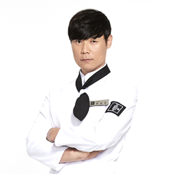
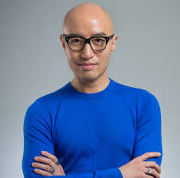
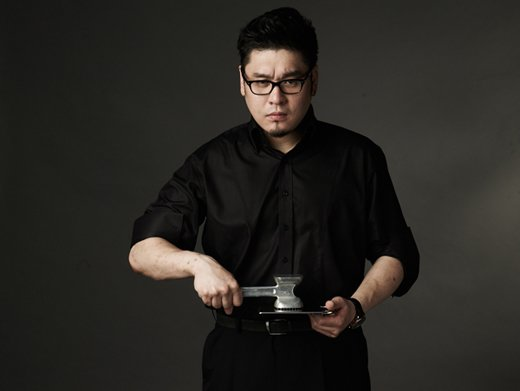
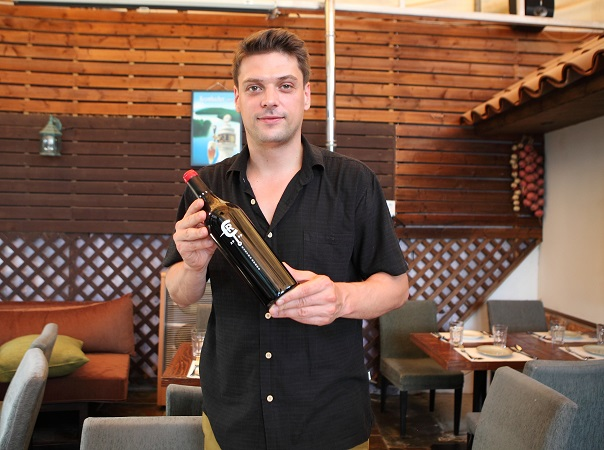
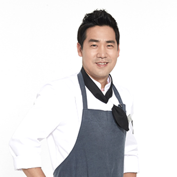

We will introduce pasta best friend with steak at our restaurant.

Hyunseok Choi: Steak,Pasta
As a veteran chef with more than 20 years of experience, he started cooking in March 1995. In 2007, he was recognized as one of the '30 riders of the cultural art world recommended by experts in each field.' With a height of about 190cm, a great voice and a handsome man, he was already popular enough to form a fan club during the days of Tastey Bluebad. He has been on a cable TV cooking show, showing off his excellent sense of entertainment, and is now a great chef since 2015. According to the low tide, he is a top-ranking figure among Korean high school chefs.

Seokheon Hong: Pasta, Pilaff
Hong Seok-cheon is a chef and an actor in Korea. Born in Cheongyang-eup, Cheongyang-gun, Chungcheongnam-do, Korea, his current residence is Itaewon-dong, Yongsan-gu, Seoul, Korea.

Rayman Kim: Steak,Pilaff
Rayman Kim (real name: Kim Deok-yun, May 5, 1975) is a Canadian cook who is active in Korea.

Michal Ashminov: desserts & drinks
Michal Spasov Ashminov is a Bulgarian chef. Born in Sofia between a Bulgarian father and a Polish mother, he has worked as a chef at the Sheraton Hotel Balkan in Sofia.

Sam Kim: Pasta,Pilaff
Sam Kim is a Korean national chef. His real name is Kim Hee-tae and the name Sam Kim was created during his 10 years of study abroad.